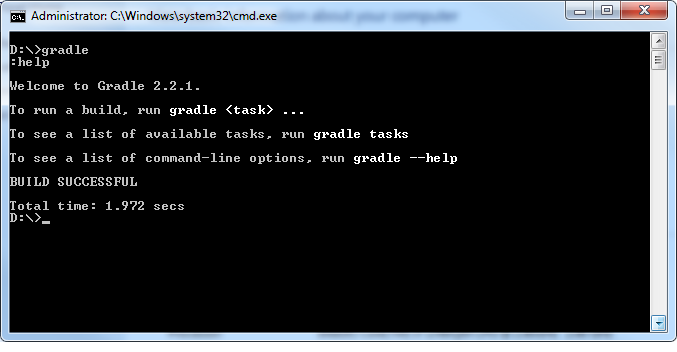

Gradle 安装
Gradle的安装非常简单。安装步骤如下。
访问
http://gradle.org/downloads.html
下载最新发行版本
解压下载的文件到希望安装的目标文件夹
添加环境变量“GRADLE_HOME” 指向安装文件夹(可选)
将 $GRADLE_HOME/bin 添加到环境变量path中
Windows安装验证
打开cmd命令窗口，执行gradle命令，显示如下：
